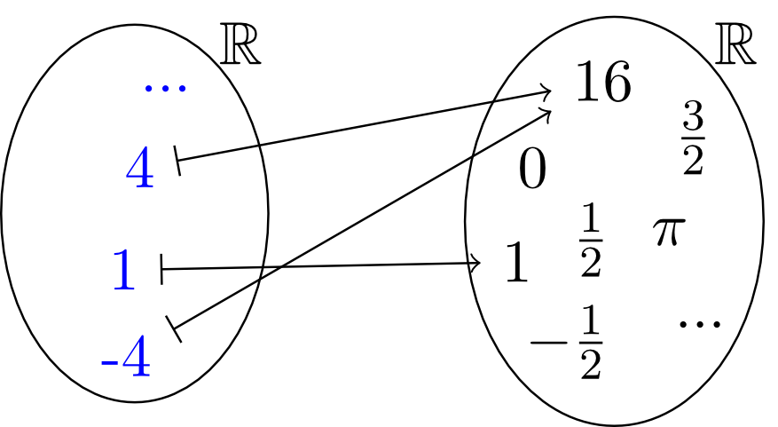
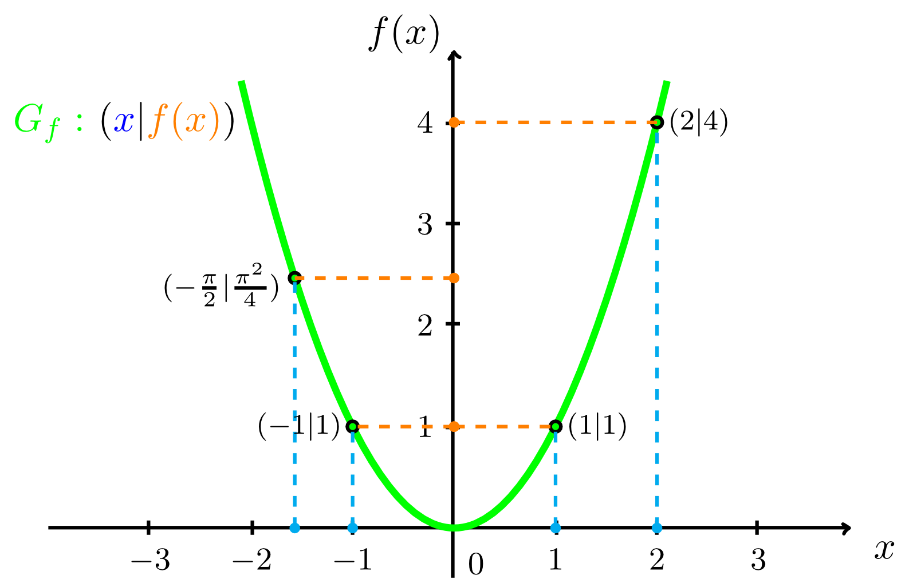
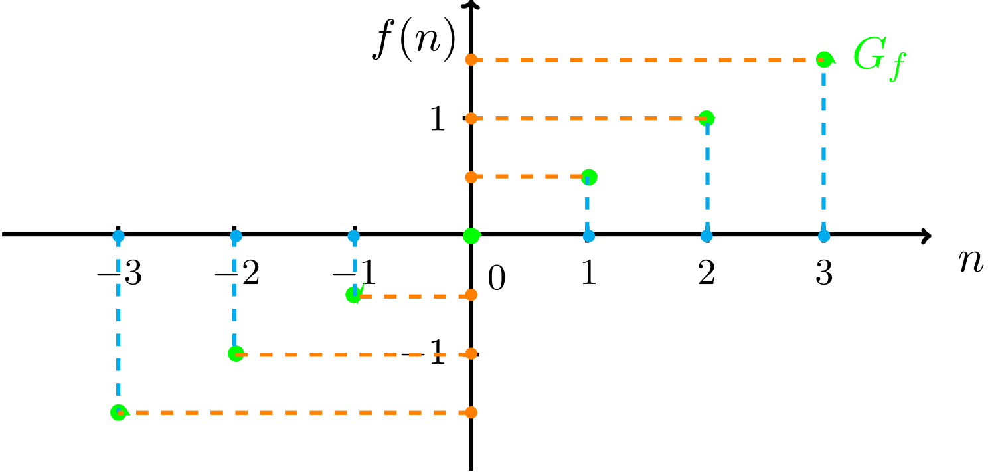
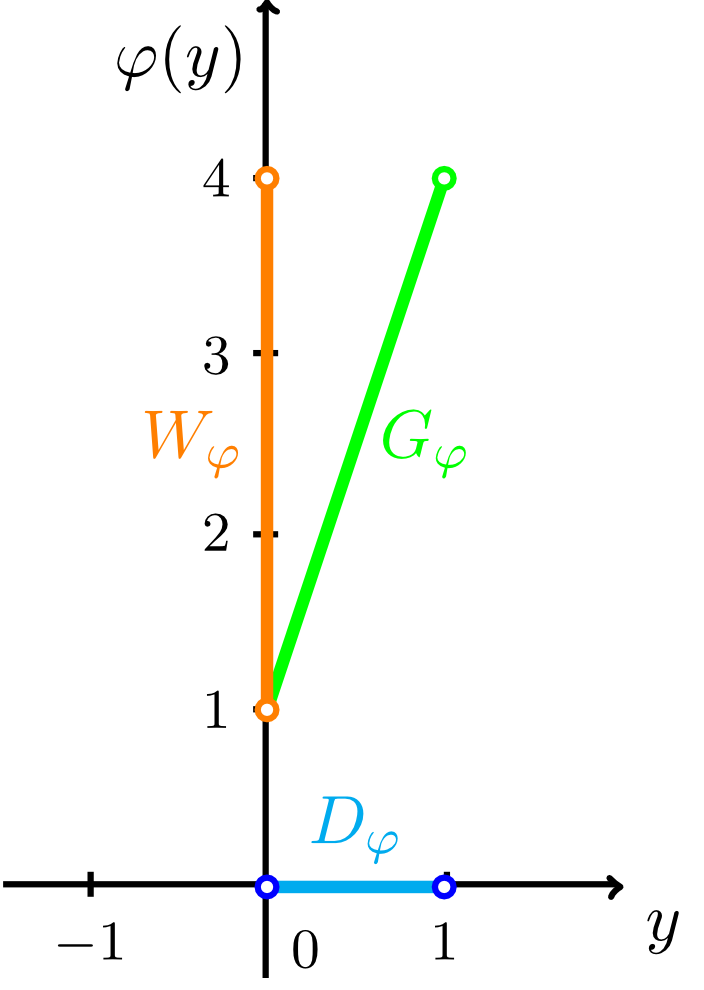
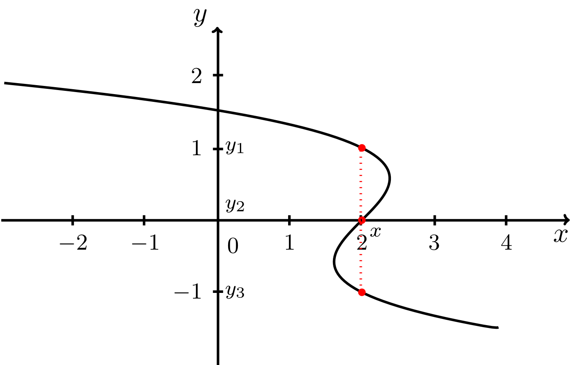
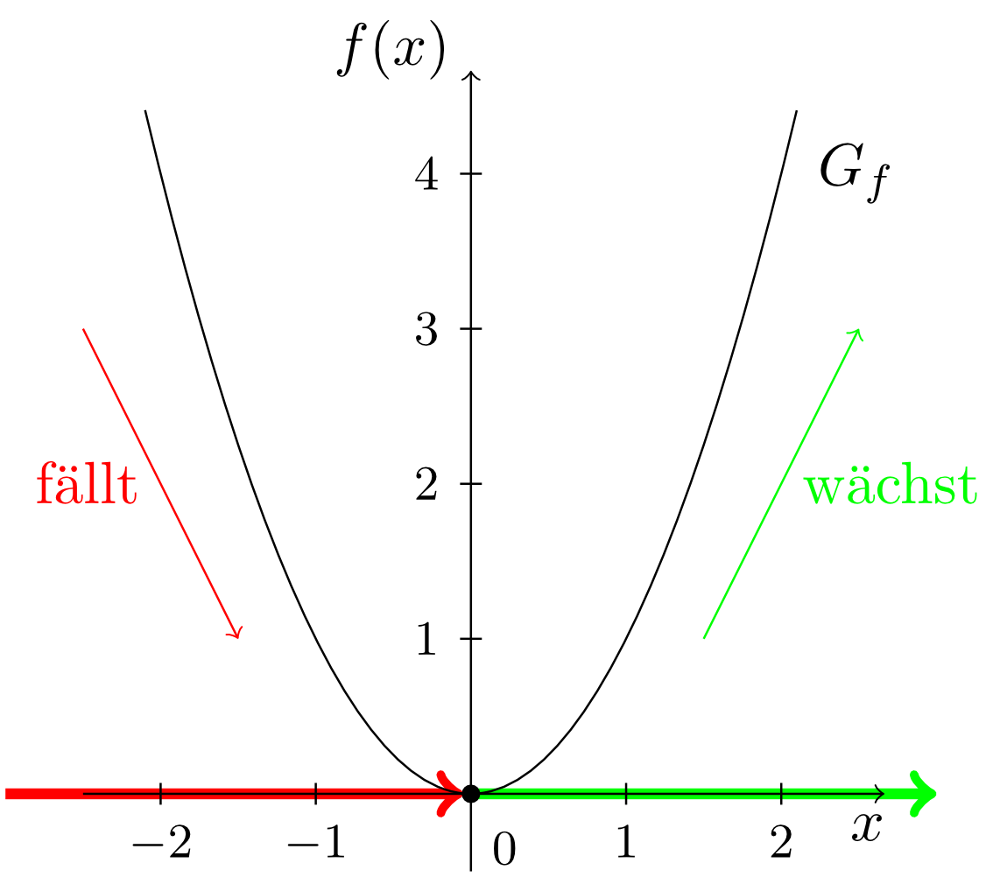
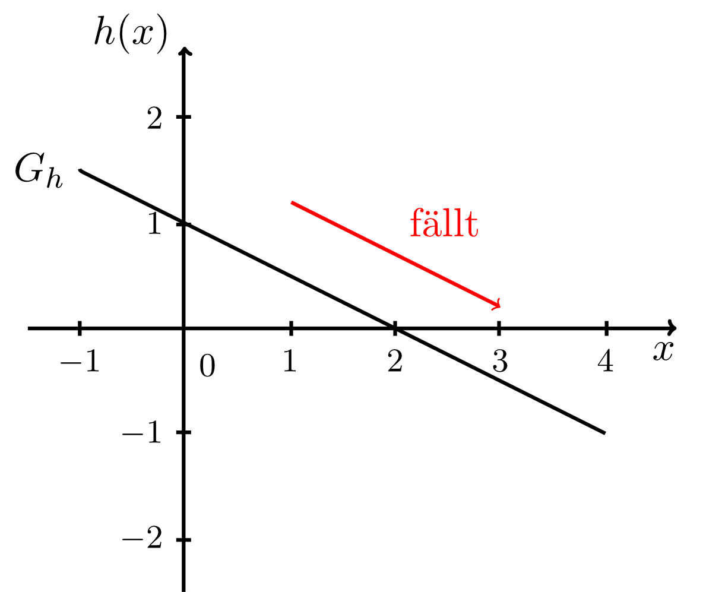
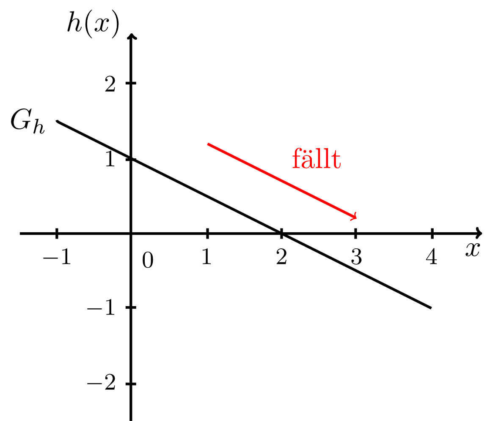

1 - 1.6
6.1.4 Umkehrbarkeit
Die bildliche Darstellung einer Funktion, wie zum Beispielals sogenanntes Venn-Diagramm (vgl. Abschnitt 6.1.2)

ist zwar nützlich, um den Funktionsbegriff zu verstehen, sagt aber nicht viel über die besonderen Eigenschaften der Funktion aus. Hierfür gibt es eine andere Möglichkeit der grafischen Darstellung, nämlich die des Graphen der Funktion. Dazu fertigen wir ein zweidimensionales Koordinatensystem (vgl. Modul 9) an, in dem die Zahlen aus dem Definitionsbereich der Funktion auf der Querachse und die Zahlen aus dem Zielbereich auf der Hochachse eingetragen werden. In einem solchen Koordinatensystem markieren wir alle Punkte , die durch die Zuordnung der Funktion entstehen, in diesem Fall also alle Punkte , d.h. , , , usw. Dadurch entsteht eine Kurve, die Graph von genannt und mit dem Symbol bezeichnet wird:

Betrachten wir die Funktion
aus Abschnitt 6.1.2 und deren Graphen

so stellen wir fest, dass Graphen nicht immer durchgehende Kurven sein müssen, sondern wie in diesem Fall auch nur aus einzelnen Punkten bestehen können.
Anhand des Graphen sind nun viele Grundeigenschaften einer Funktion erkennbar. Rufen wir uns die Funktion
mit dem Definitionsbereich und dem Wertebereich aus Abschnitt 6.1.2 ins Gedächtnis. Wenn wir ihren Graphen zeichnen, so erkennen wir, dass der Definitionsbereich und der Wertebereich auf der Quer- bzw. Hochachse auftauchen:

Aufgabe 6.1.14
Betrachten Sie nochmal den Graphen der Funktion
markieren Sie Definitions- und Wertebereiche auf Quer- und Hochachse und geben Sie diese an.
Betrachten Sie nochmal den Graphen der Funktion
markieren Sie Definitions- und Wertebereiche auf Quer- und Hochachse und geben Sie diese an.
Weiterhin ist die Eigenschaft der Eindeutigkeit von Funktionen am Graphen zu erkennen. Um dies einzusehen, machen wir uns klar, dass eine Kurve wie in der folgenden Abbildung

niemals als Graph einer Funktion auftauchen kann. Zu einem -Wert aus dem Definitionsbereich müsste es hier mehrere Werte aus dem Wertebereich geben. Graphen von Funktionen geben die Eindeutigkeit also immer dadurch wieder, dass sie ,,nicht in horizontaler Richtung zurücklaufen können".
Eine weitere wichtige Eigenschaft eines Graphen ist sein Wachstumsverhalten. Betrachten wir die Funktion
und ihren Graphen.

Auf der Querachse in diesem Graphen erkennen wir zwei Bereiche, in denen der Graph unterschiedliches Wachstumsverhalten zeigt. Im Bereich von -Werten mit fällt der Graph. Das heißt, werden die -Werte größer, so werden die zugehörigen Funktionswerte auf der Hochachse kleiner. Im Bereich von -Werten mit stellen wir das gegenteilige Verhalten fest. Bei größer werdenden -Werten werden auch die zugehörigen Funktionswerte größer. Der Graph wächst. Beim Wert geht der fallende Bereich in den wachsenden Bereich über. Solche Werte werden bei der Untersuchung von Scheitelpunkten in Abschnitt 6.2.7 und beim Bestimmen von Extremwerten in Modul 7 besonders wichtig werden.
Wir bezeichnen diese beiden Eigenschaften als streng monoton fallend bzw. streng monoton wachsend und schreiben sie mathematisch folgendermaßen auf:
Dies gilt so für alle Funktionen, die wir in diesem Modul betrachten werden. Oft treffen die beschriebenen Monotonieeigenschaften nur in bestimmten Bereichen der Definitionsmenge der Funktion zu, wie oben bei der Standardparabel gesehen. Es gibt jedoch auch Funktionen, die nur eine der Monotonieeigenschaften im gesamten Definitionsbereich besitzen (siehe Beispiel 6.1.16 unten). In diesem Fall nennt man dann die gesamte Funktion streng monoton wachsend oder streng monoton fallend. Weiterhin heißt eine Funktion, die entweder streng monoton fallend oder streng monoton wachsend ist, einfach streng monoton.
Ein weiteres Beispiel zeigt, wie man strenge Monotonie mit Hilfe des Lösens von Ungleichungen aus Modul 3 bei einer Funktion explizit nachrechnen kann.
Beispiel
6.1.16
Gegeben sei die Funktion
Ist streng monoton wachsend oder streng monoton fallend?
Wir beginnen, zwei beliebige Zahlen aufzuschreiben mit der Eigenschaft, dass
gilt. Durch Äquivalenzumformungen von Ungleichungen können wir nun entweder zu oder zu umformen und damit folgern, dass streng monoton wachsend oder streng monoton fallend ist. Es gelten die folgenden Äquivalenzumformungen für :
Weiterhin wird in der Abbildungsvorschrift addiert. Wir erhalten also
Da nun gilt, ist streng monoton fallend. Dies können wir auch am Graphen von erkennen:

Gegeben sei die Funktion
Ist streng monoton wachsend oder streng monoton fallend?
Wir beginnen, zwei beliebige Zahlen aufzuschreiben mit der Eigenschaft, dass
gilt. Durch Äquivalenzumformungen von Ungleichungen können wir nun entweder zu oder zu umformen und damit folgern, dass streng monoton wachsend oder streng monoton fallend ist. Es gelten die folgenden Äquivalenzumformungen für :
Weiterhin wird in der Abbildungsvorschrift addiert. Wir erhalten also
Da nun gilt, ist streng monoton fallend. Dies können wir auch am Graphen von erkennen:

Aufgabe 6.1.17
Rechnen Sie durch Äquivalenzumformungen von Ungleichungen explizit nach, dass
streng monoton wachsend ist.
Rechnen Sie durch Äquivalenzumformungen von Ungleichungen explizit nach, dass
streng monoton wachsend ist.